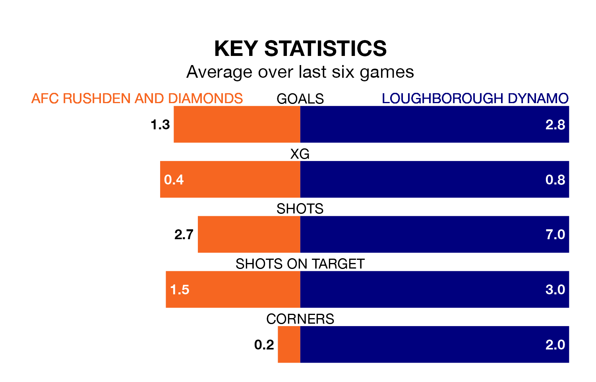

Loughborough Dynamo travel to AFC Rushden and Diamonds on Saturday in the Northern Premier League Division One Midlands.
The visitors come into the game on the back of a defeat in their last match, having lost to Coventry Sphinx 3-2 at home.
Rushden & Diamonds also lost their last match, 7-1 against Quorn.
Rushden & Diamonds are bottom of the table after 30 games, of which they have won five and drawn three, earning 18 points.
Loughborough Dynamo are 15 places ahead of the hosts in fifth, with 18 wins and five draws putting them on 59 points.
With 26 goals in 30 games so far this season, Rushden & Diamonds are the league's lowest scorers with 0.9 goals per game. And they are conceding more than average, letting in 66 goals at a rate of 2.2 per game.
The away side, meanwhile, are above average scorers, with 2.0 goals per game, compared to a league average of 1.6. They have conceded 1.5 goals per game.
Rushden & Diamonds are in mixed form in the Northern Premier League Division One Midlands, with two wins and a draw from their last six games.
With three wins and three losses over that period, Loughborough Dynamo's form is slightly better – they have taken nine points from 18, compared to the home team's seven.
Over the last two years, Rushden & Diamonds and Loughborough Dynamo have played each other twice. Loughborough Dynamo won one of them and they drew the other.
Their last meeting was on September 9, when they played out a 1-1 draw.
Updated: 12:16 (UTC), 25/03/24